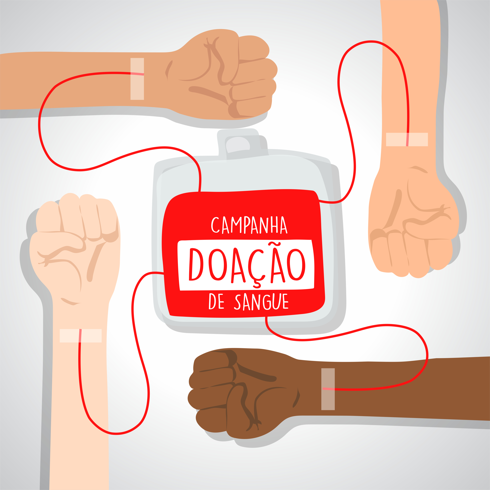

A doação voluntária de sangue é o que permite o abastecimento dos bancos de sangue. Sem a ajuda de doadores, não é possível atender à demanda de cirurgias e de outros procedimentos cruciais para a vida de determinados pacientes.
Anualmente, o Brasil coleta, em média, 3,6 milhões de bolsas. Isso corresponde a 1,8% da população doando sangue, o que, de acordo com a Organização Mundial da Saúde (OMS), está dentro da média de doadores esperada em um país — entre 1% e 3%.
Apesar disso, em algumas épocas do ano, há uma baixa nas doações, o que gera um alerta e faz com que os estoques de sangue fiquem praticamente zerados. Por esse motivo, é importante incentivar esse hábito, cabendo ao Ministério da Saúde trabalhar incessantemente para aumentar esse índice.

1. Cada doação ajuda até quatro pessoas
A doação de sangue é um ato que pode salvar a vida
de até quatro pessoas. Um exemplo disso são pacientes que
precisam de transfusão de sangue, seja por cirurgias, seja
por traumas, seja em outras situações que exigem a reposição
rápida de grandes quantidades de sangue.
2. O sangue é insubstituível
Já existem substâncias sintéticas que podem desacelerar
a necessidade de transfusão de sangue, mas não há como substituí-lo
de forma definitiva. Por isso, a única maneira de atender pacientes
que necessitam do sangue é por meio da doação.
3. A doação de sangue não oferece riscos de contaminação
Para doar sangue, é necessário passar por uma entrevista clínica e estar de acordo
com os critérios de doação definidos pelo Ministério da Saúde e pela Agência Nacional
de Vigilância Sanitária (Anvisa).
Além disso, os itens usados na coleta são esterilizados e descartáveis, e o sangue,
por sua vez, passa por testes laboratoriais antes de ser utilizado para o atendimento de pacientes.
Todos esses procedimentos garantem a segurança e a prevenção de doenças, tanto para quem doa quanto para quem recebe.
4. O sangue doado é restabelecido rapidamente
O sangue doado não faz falta nenhuma para a saúde e o bem-estar de quem doa.
Homens e mulheres na fase adulta possuem cerca de 5 litros de sangue no organismo.
Durante uma doação de sangue, são coletados 450 ml — 8% do volume total —, e o corpo consegue
repor essa fração em até 24 horas após o ato.